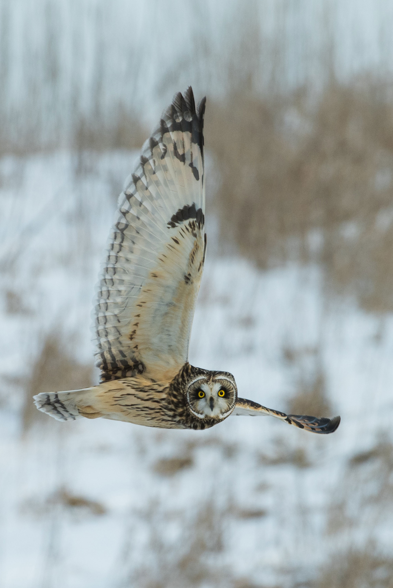

Who's Who
These owls may wear the same game face, but when it comes to personality, they’re as different as day and night.

It’s not easy to get owls to mug for the camera. Even in captivity the birds remain aloof, unruffled by the flash and unmoved by attempts to bribe them. Photographer Brad Wilson learned that lesson firsthand after trying to win over owls from the World Bird Sanctuary in St. Louis and The Wildlife Center near Española, New Mexico. He spent hours with each bird, trying to capture its direct gaze. “It’s hard to get animals to look at you like humans do,” he says. “That shot became my holy grail.”
Wilson is an expert at point-blank portraits. His series “Affinity” features 65 species, including a white rhino, a white tiger, an Arctic fox, and an Egyptian Vulture. But owls were the most compelling and challenging subjects, he says. It takes years of building mutual trust before an owl will accept physical contact from a single person, says Wilson, and “owls don’t extend that privilege to other humans.”
Wilson wanted his images to accentuate the nobility and independence of each captive bird, minimizing its dependence on its caretaker. Many had wing injuries, for example, which he concealed in his pictures. The owls’ human perches likewise hid themselves, contorting their bodies to stay out of the frame. It was a gesture to the birds, a way of saying that although their wild days are behind them, they still have thier dignity.
The Western Screech-Owl plays host to a surprising houseguest: blind snakes—worm-like reptiles that dwell underground—that the owls ferry, live, back to their nests. This unlikely act of mercy is actually a child-rearing strategy: Parents that share their nests with the strange bedfellows have better success at raising young. That’s because the snakes devour pests like ants and flies, whose larvae consume food reserved for owlets.
Back to Course Home Page